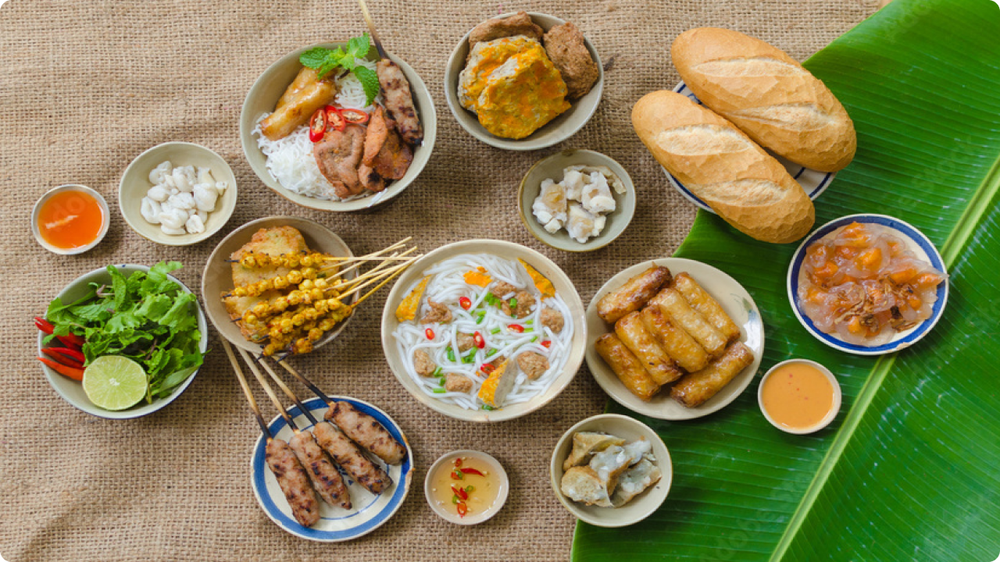

Welcome to VIỆT.T.FOOD (Vietnamese Tradition
Food)! Our passion for authentic Vietnamese food and a desire to share
the warmth of its flavors led to the creation of this platform.
Our mission
Our mission is to bring the vibrant and diverse world of
Vietnamese traditional foods to your kitchen. We believe that
behind every recipe lies a story—a story of family, culture, and
the joy of sharing a delicious meal. Our goal is to be your go-to
resource for exploring and mastering the art of Vietnamese
cooking.

What we offer
Discover a treasure trove of carefully curated traditional
Vietnamese recipes, each with a personal touch. Our recipes are
accompanied by stories, tips, and tricks to make your culinary
journey both educational and enjoyable.
Audio "The Art of Vietnamese Cuisine"
As you embark on this culinary journey through our gallery, we invite
you to enrich your experience by diving into "The Art of Vietnamese
Cuisine."
Click the play button below to immerse yourself in the cultural
symphony that accompanies the creation of each dish.
Vietnamese cuisine reflects the quintessence and richness of
thousands of years of cultural heritage. When you think about
Vietnamese food, the first image that people often mention is a
steamy bowl of pho.
However, the Vietnamese culinary culture is incredibly diverse and
shaped by an array of influences from other cultures. Vietnamese
cuisine centers around the harmony and artistic presentation of
fresh seasonal ingredients.
It is the brilliant balance of colors, aromas and flavors. With
the right composition of warming and cooling elements, Vietnamese
food can also be used as medicine to regain the yin and yang
balance in our body.
It requires patience and dedication. It is artisanal and it offers
an opportunity to bring people with different backgrounds together
to celebrate the essence and richness of the Vietnamese heritage.